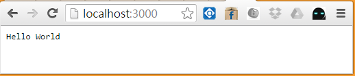
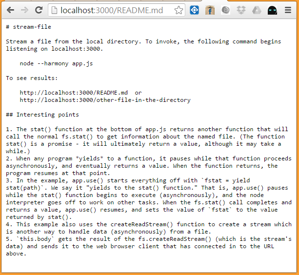
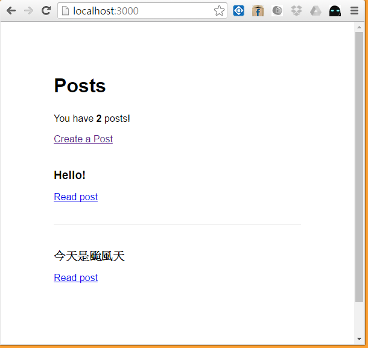

第 6 章 - Koa 伺服端框架
在 Node.js 當中，目前最常被使用的 server 端框架應該是 Express.js ，但是我最喜歡的是 Koa.js 。
Express.js 是比較早出來的 Node.js 伺服端框架，因此使用者比較多，但是自從 JavaScript 新標準 ECMAScript 6.0 出來之後，提出了新的 yield/Generator 語法，於是 Express.js 的創建者決定運用這種語法創造一個新的框架替代 Express.js ，這個新框架就是 Koa.js 。
所以、Koa 基本上就是支援 yield/Generator 語法的 Express.js ，但是由於 Koa 是 2015 年才出現的框架，因此還是有很多人持續使用著 Express.js 。
要學習 Koa 框架，最好的辦法就是直接去看 Koa 官方專案的範例，透過範例來學習 Koa 框架我認為是最快的方式。
Koa 的官方網站上有十幾個經典範例，您可以從下列網址查看這些範例。
如果想了解 koa2 的 async/await 到底是怎麼實做出來的，可以參考下列文章：
- callback, promise, fetch, yield, async/await 發展簡易介紹
- ES next中async/await proposal实现原理是什么？
- async 函数的含义和用法
- 理解 Javascript 的 async await
- 標準： Async Functions
現在、就讓我們挑選其中比較重要的範例，循序漸進的來學習 Koa 這個伺服端框架吧！
Koa 範例下載與安裝
您可以先安裝 git 之後，用下列指令下載 koa.js 官方範例，然後再開始執行每一個範例。
$ git clone https://github.com/koajs/examples.git
$ cd examples
$ npm install
以下是我在 windows 8 當中執行這些指令的結果：
D:\jsweb>git clone https://github.com/koajs/examples.git
Cloning into 'examples'...
remote: Counting objects: 570, done.
remote: Total 570 (delta 0), reused 0 (delta 0), pack-reused 570
Receiving objects: 100% (570/570), 92.06 KiB | 0 bytes/s, done.
Resolving deltas: 100% (253/253), done.
Checking connectivity... done.
D:\jsweb>cd examples
D:\jsweb\examples>npm install
npm WARN deprecated jade@0.26.3: Jade has been renamed to pug, please install th
e latest version of pug instead of jade
npm WARN deprecated minimatch@0.3.0: Please update to minimatch 3.0.2 or higher
to avoid a RegExp DoS issue
koa-examples@0.0.1 D:\jsweb\examples
+-- co@4.6.0
+-- co-body@1.2.0
| `-- qs@2.3.3
...
完成之後，您就可以試試這些範例執行後到底會發生甚麼事了！
Koa 範例 - Hello
這是最簡單的 Koa 範例，可以說是 koa 版的 HelloWorld 程式。
- 原始碼： https://github.com/koajs/examples/tree/master/hello-world
- 使用方法：執行 node app 之後看 http://localhost:3000/
檔案： app.js
var koa = require('koa');
var app = module.exports = koa();
app.use(function *(){
this.body = 'Hello World';
});
if (!module.parent) app.listen(3000);
執行方法
D:\jsweb\examples>cd hello-world
D:\jsweb\examples\hello-world>node app
顯示結果：

Koa 範例 - 檔案回傳
這個檔案回傳的範例，基本上就是一個靜態檔案伺服器，因此事很重要的功能，幾乎每個網站都會使用到這樣的功能。
- 原始碼： https://github.com/koajs/examples/tree/master/stream-file
- 使用方法：執行 node app 之後看 http://localhost:3000/README.md
檔案： app.js
var koa = require('koa');
var fs = require('fs');
var app = module.exports = koa();
var path = require('path');
var extname = path.extname;
// try GET /app.js
app.use(function *() {
var path = __dirname + this.path;
var fstat = yield stat(path);
if (fstat.isFile()) {
this.type = extname(path);
this.body = fs.createReadStream(path);
}
});
if (!module.parent) app.listen(3000);
/**
* thunkify stat
*/
function stat(file) {
return function (done) {
fs.stat(file, done);
};
}
啟動伺服器
D:\jsweb\examples>cd stream-file
D:\jsweb\examples\stream-file>dir
磁碟區 D 中的磁碟是 Data
磁碟區序號: 9EBE-C367
D:\jsweb\examples\stream-file 的目錄
2016/07/08 上午 08:47 <DIR> .
2016/07/08 上午 08:47 <DIR> ..
2016/07/08 上午 08:47 506 app.js
2016/07/08 上午 08:47 1,459 README.md
2016/07/08 上午 08:47 628 test.js
3 個檔案 2,593 位元組
2 個目錄 112,044,572,672 位元組可用
D:\jsweb\examples\stream-file>node app
執行畫面

您可以在該資料夾當中放入自己的檔案，然後打上對應的網址後就可以看到該檔案了。
Koa 範例 - 檔案上傳
這個範例展示了如何接收瀏覽器傳來的檔案，以及如何用 <input type="file" ...> 這樣的語法製作上傳檔案的網頁。
- 原始碼： https://github.com/koajs/examples/blob/master/upload/index.js
- 使用方法：執行 node app 之後看 http://localhost:3000/
檔案： index.js
/**
* Module dependencies.
*/
var logger = require('koa-logger');
var serve = require('koa-static');
var parse = require('co-busboy');
var koa = require('koa');
var fs = require('fs');
var app = koa();
var os = require('os');
var path = require('path');
// log requests
app.use(logger());
// custom 404
app.use(function *(next){
yield next;
if (this.body || !this.idempotent) return;
this.redirect('/404.html');
});
// serve files from ./public
app.use(serve(__dirname + '/public'));
// handle uploads
app.use(function *(next){
// ignore non-POSTs
if ('POST' != this.method) return yield next;
// multipart upload
var parts = parse(this);
var part;
while (part = yield parts) {
var stream = fs.createWriteStream(path.join(os.tmpdir(), Math.random().toString()));
part.pipe(stream);
console.log('uploading %s -> %s', part.filename, stream.path);
}
this.redirect('/');
});
// listen
app.listen(3000);
console.log('listening on port 3000');
<!DOCTYPE html>
<html>
<head>
<title>Upload</title>
<style>
body {
padding: 50px;
font: 14px Helvetica, Arial;
}
</style>
</head>
<body>
<h1>File Upload</h1>
<p>Try uploading multiple files at a time.</p>
<form action="/" method="post" enctype="multipart/form-data">
<input type="file" name="file" multiple>
<input type="submit" value="Upload">
</form>
</body>
</html>
啟動伺服器
D:\jsweb\examples\upload>node index.js
執行畫面

然後您可以按《選擇檔案》，選一個檔案後按下《Upload》，這樣就可以把檔案上傳到伺服器內。
D:\jsweb\examples\upload>node index.js
listening on port 3000
<-- GET /index.html
--> GET /index.html 200 56ms 410b
<-- POST /
uploading jquery_example.png -> C:\Users\user\AppData\Local\Temp\0.5640067097265
273
--> POST / 302 52ms 33b
<-- GET /
--> GET / 200 8ms 410b
上述案例中，我們上船的檔案被放到了C:\Users\user\AppData\Local\Temp\0.5640067097265 這個位置。
當然、您可以修改程式，讓上船的內容放到您想要的位置，並且用指定的名稱存檔。
Koa 範例 - Blog
主要檔案: index.js
/**
* Module dependencies.
*/
var render = require('./libender');
var logger = require('koa-logger');
var route = require('koa-route');
var parse = require('co-body');
var koa = require('koa');
var app = koa();
// "database"
var posts = [];
// middleware
app.use(logger());
// route middleware
app.use(route.get('/', list));
app.use(route.get('/post/new', add));
app.use(route.get('/post/:id', show));
app.use(route.post('/post', create));
// route definitions
/**
* Post listing.
*/
function *list() {
this.body = yield render('list', { posts: posts });
}
/**
* Show creation form.
*/
function *add() {
this.body = yield render('new');
}
/**
* Show post :id.
*/
function *show(id) {
var post = posts[id];
if (!post) this.throw(404, 'invalid post id');
this.body = yield render('show', { post: post });
}
/**
* Create a post.
*/
function *create() {
var post = yield parse(this);
var id = posts.push(post) - 1;
post.created_at = new Date;
post.id = id;
this.redirect('/');
}
// listen
app.listen(3000);
console.log('listening on port 3000');
執行
D:\git\example>npm install swig
swig@1.4.2 node_modules\swig
├── optimist@0.6.1 (wordwrap@0.0.2, minimist@0.0.10)
└── uglify-js@2.4.19 (uglify-to-browserify@1.0.2, async@0.2.10, yargs@3.5.4,
source-map@0.1.34)
D:\git\example>cd blog
D:\git\example\blog>node index
listening on port 3000
<-- GET /post
--> GET /post 404 23ms -
<-- GET /
--> GET / 200 116ms -
<-- GET /post/new
--> GET /post/new 200 18ms -
<-- POST /post
--> POST /post 302 47ms -
<-- GET /
--> GET / 200 10ms -
<-- GET /post/new
--> GET /post/new 200 40ms -
<-- POST /post
--> POST /post 302 32ms -
<-- GET /
--> GET / 200 25ms -
<-- GET /post/0
--> GET /post/0 200 8ms -
<-- GET /post/1
--> GET /post/1 200 7ms -
<-- GET /post/new
--> GET /post/new 200 5ms -
執行結果

上述的 Blog 範例寫法，是採用《請求、回應並換頁》的作法，這種作法裡面通常會搭配一個《樣板引擎》，這個範例搭配的樣板引擎是 swig。
我們可以在 lib/render.js 這個檔案裡看到下列程式碼，其中 map: { html: 'swig' } 這行代表要使用 swig 樣板引擎來處理副檔名為 .html 的檔案。
var views = require('co-views');
// setup views mapping .html
// to the swig template engine
module.exports = views(__dirname + '/../views', {
map: { html: 'swig' }
});
接著我們會看到在 view 這個資料夾底下有下列檔案
index.html
layout.html
list.html
new.html
show.html
這些就是所謂的樣版，其中 layout.html 是大家共用的上層樣版，內容如下：
<html>
<head>
<title>{% block title %}Blog{% endblock %}</title>
<style>
body {
padding: 80px;
font: 16px Helvetica, Arial;
}
h1 {
font-size: 2em;
}
h2 {
font-size: 1.2em;
}
#posts {
margin: 0;
padding: 0;
}
#posts li {
margin: 40px 0;
padding: 0;
padding-bottom: 20px;
border-bottom: 1px solid #eee;
list-style: none;
}
#posts li:last-child {
border-bottom: none;
}
textarea {
width: 500px;
height: 300px;
}
input[type=text],
textarea {
border: 1px solid #eee;
border-top-color: #ddd;
border-left-color: #ddd;
border-radius: 2px;
padding: 15px;
font-size: .8em;
}
input[type=text] {
width: 500px;
}
</style>
</head>
<body>
<section id="content">
{% block content %}
<p>Missing content!</p>
{% endblock %}
</section>
</body>
</html>
您可以看到其中有下列語法，這兩個區塊是可以被下層樣版取代的區塊。
{% block title %}Blog{% endblock %}
...
{% block content %}
<p>Missing content!</p>
{% endblock %}
舉例而言，在 list.html 這個檔案裡，就用 {% extends 'layout.html' % 這個指令引入了 layout.html 。
{% extends 'layout.html' %}
{% block title %}Posts{% endblock %}
{% block content %}
<h1>Posts</h1>
<p>You have <strong>{{ posts.length }}</strong> posts!</p>
<p><a href="/post/new">Create a Post</a></p>
<ul id="posts">
{% for post in posts %}
<li>
<h2>{{ post.title }}</h2>
<p><a href="/post/{{ post.id }}">Read post</a></p>
</li>
{% endfor %}
</ul>
{% endblock %}
接著還用 {% block title %}Posts{% endblock %} 將 title 區塊的內容改為 Posts，然後又用 {% block content %} 這一大塊內容，取代原本的 content 區塊，並用 {% for post in posts %} 這樣的 swig 迴圈語法，逐個列出 posts 陣列中的每一個留言的標題與連結。
這種做法就是典型的《樣板引擎》使用法，建議大家仔細地看看這個專案，您就會完全知道如何用 koa + swig 樣板引擎來設計網站了。
為 koa-blog 範例加上資料庫功能
上面的 blog 範例非常的簡潔有力，但該範例的資料是儲存在記憶體當中的，只要伺服器一關機，資料就不見了，因此還不能真正拿來上線使用。
為了讓這個範例更實用，我們改將資料儲存在 mongodb 當中，這樣就能夠永久保存這些貼文訊息了。
我們將 blog 專案中的 index.js 檔案修改如下：
/**
* Module dependencies.
*/
var MongoClient = require('mongodb').MongoClient;
// http://stackoverflow.com/questions/7825700/convert-string-to-objectid-in-mongodb
var ObjectId = require('mongodb').ObjectID;
var render = require('./lib/render');
var logger = require('koa-logger');
var route = require('koa-route');
var parse = require('co-body');
var koa = require('koa');
var app = koa();
var db;
MongoClient.connect("mongodb://localhost:27017/blog", function(err, pDb) {
if(err) { return console.dir(err); }
db = pDb;
});
// "database"
// var posts = [];
// middleware
app.use(logger());
// route middleware
app.use(route.get('/', list));
app.use(route.get('/post/new', add));
app.use(route.get('/post/:id', show));
app.use(route.post('/post', create));
// route definitions
/**
* Post listing.
*/
function *list() {
var collection = db.collection('post');
var posts = yield collection.find().toArray();
this.body = yield render('list', { posts: posts });
}
/**
* Show creation form.
*/
function *add() {
this.body = yield render('new');
}
/**
* Show post :id.
*/
function *show(id) {
// var post = posts[id];
var collection = db.collection('post');
var posts = yield collection.find({_id:ObjectId(id)}).toArray();
var post = posts[0];
if (!post) this.throw(404, 'invalid post id');
this.body = yield render('show', { post: post });
}
/**
* Create a post.
*/
function *create() {
var post = yield parse(this);
// var id = posts.push(post) - 1;
post.created_at = new Date;
// post.id = id;
var collection = db.collection('post');
var results = yield collection.insertMany([post], {w:1});
this.redirect('/');
}
// listen
app.listen(3000);
console.log('listening on port 3000');
在執行這個程式前，我們必須先安裝好 mongodb 資料庫系統，然後用 mongod 指令啟動資料庫伺服器。接著再用 node index.js 指令啟動 blog 程式。
因此我們必須開兩個命令列視窗，一個用來啟動 mongodb 資料庫伺服器，另一個則用來執行 blog 程式。
以下是我的執行過程：
第一個命令列視窗：(建立 db 資料夾，並啟動 mongod 伺服器)
D:\jsweb>mkdir db
D:\jsweb>mongod --dbpath db
2016-07-08T09:42:09.205+0800 I CONTROL [initandlisten] MongoDB starting : pid=4
460 port=27017 dbpath=db 64-bit host=asus
...
2016-07-08T09:42:10.060+0800 I NETWORK [initandlisten] waiting for connections
on port 27017
2016-07-08T09:42:53.767+0800 I NETWORK [initandlisten] connection accepted from
127.0.0.1:50852 #1 (1 connection now open)
2016-07-08T09:42:53.838+0800 I NETWORK [initandlisten] connection accepted from
127.0.0.1:50853 #2 (2 connections now open)
2016-07-08T09:42:53.889+0800 I NETWORK [conn1] end connection 127.0.0.1:50852 (
1 connection now open)
2016-07-08T09:43:25.913+0800 I COMMAND [conn2] command blog.post command: inser
t { insert: "post", documents: [ { title: "Hello!", body: "I am ccc.", created_a
t: new Date(1467942205743), _id: ObjectId('577f053d2bef18cc093c231a') } ], order
ed: true, writeConcern: { w: 1 } } ninserted:1 keyUpdates:0 writeConflicts:0 num
Yields:0 reslen:40 locks:{ Global: { acquireCount: { r: 2, w: 2 } }, Database: {
acquireCount: { w: 1, W: 1 } }, Collection: { acquireCount: { W: 1 } } } protoc
ol:op_query 158ms
第二個命令列視窗：修改後的程式放在 mongoBlog 這個資料夾中，啟動該程式。
D:\jsweb\examples>cd mongoBlog
D:\jsweb\examples\mongoBlog>node index.js
listening on port 3000
<-- GET /
--> GET / 200 136ms 1008b
<-- GET /post/new
--> GET /post/new 200 30ms 1.12kb
<-- POST /post
--> POST /post 302 274ms 33b
<-- GET /
--> GET / 200 36ms 1.1kb
<-- GET /post/new
--> GET /post/new 200 23ms 1.12kb
<-- POST /post
--> POST /post 302 17ms 33b
<-- GET /
--> GET / 200 12ms 1.23kb
一個執行畫面

您可以直接下載 https://ccckmit.gitbooks.io/javascript-web/content/ch7/koaMongoBlog.zip 這個已經修改好的專案，解開後放在 koa 範例資料夾中執行，並觀察一下這個程式的運作情況，相信您會從這個範例中學到完整的樣版式網站設計方法。
通用伺服器 -- fdbserver
在網站設計的領域，前端網頁似乎千變萬化，但是後端網站所做的事情通常很固定。
這些事情不外乎就是：接受前端送來的請求，將資料寫入檔案系統或資料庫，或讀出後傳回給前端瀏覽器。
既然如此，當我們學會 koa 之後，其實就可以寫一個通用的伺服端程式，用來對《資料庫與檔案系統》進行《新增、修改、刪除、查詢》等等動作。
於是我寫了 fdbserver 這個專案，並且上傳到 npm 上面，之後我們會用這個專案來作為 server 端，作為通用的伺服器。
剩下的事情，就交給前端去處理了。
Fdbserver 在 github 的網址如下：
您可以用 git 把該專案抓取下來，然後安裝之後就可以啟動使用了。
git clone https://github.com/ccckmit/fdbserver.git
cd fdbserver/
npm install
node fdbserver.js
以下是 fdbserver.js 主程式的完整程式碼，您可以透過 ajax 或表單 form 的方式與這個程式互動，進行《檔案或資料庫》的《新增、修改、刪除、查詢》等動作。
var fs = require('fs');
var path = require('path');
var http = require('http');
var https = require('https');
var mzfs = require('mz/fs');
var mkdirp = require('mkdirp');
var koa = require('koa');
// 參考：http://codeforgeek.com/2014/09/handle-get-post-request-express-4/
var bodyParser = require("koa-bodyparser");
var session = require('koa-session');
var router = require('koa-router')();
var co = require('co');
var parse = require('co-busboy');
var saveTo = require('save-to');
var mongodb = require('mongodb');
var app = koa();
function comkdir(path) {
var dir = path.split("/");
dir.pop();
return function (callback) {
mkdirp(dir.join("/"), callback);
};
}
function loadSysFile(file) {
var filepath = path.join(process.cwd(), file);
if (!mzfs.existsSync(filepath)) {
filepath = path.join(__dirname, file);
}
return mzfs.readFileSync(filepath, 'utf-8');
}
var setting = JSON.parse(loadSysFile('setting.json'));
var passwords = setting.passwords;
var db = {
db : null,
tableMap:{},
}
db.table=function(tableName) {
var table = db.tableMap[tableName];
if (typeof table === 'undefined') {
table = db.tableMap[tableName] = db.db.collection(tableName);
}
return table;
}
mongodb.MongoClient.connect(setting.mongodb.dburl, function(err, db1){
if (err)
console.error("db connect fail");
else
console.log('Connect to', setting.mongodb.dburl, 'success!');
db.db=db1;
});
var fdbserver = {
app:app,
router:router,
loadSysFile:loadSysFile,
run:function() { this.app.run(); }
}
var filedir = process.cwd()+"/file/";
if (!fs.existsSync(filedir)) {
fs.mkdir(filedir);
}
app.keys = [setting.key];
app.use(session(app));
app.use(bodyParser({formLimit:5*1000*1000, jsonLimit:5*1000*1000}));
function response(res, code, msg) {
res.status = code;
res.set({'Content-Length':''+msg.length,'Content-Type':'text/plain'});
res.body = msg;
if (code !== 200) console.log('response error : ', code, msg);
}
fdbserver.response = response;
fdbserver.doAfterFilePost=function*(path, self) {
yield Promise.resolve(false);
}
fdbserver.doBeforeFileGet=function*(path, self) {
// yield false; 在 co 裡面，這會導致錯誤 : TypeError: You may only yield a function, promise, generator, array, or object
yield Promise.resolve(false);
}
function isPass(req) {
if (setting.loginToSave === false)
return true;
return typeof(req.session.user)!=='undefined';
}
var dbOp=function*(table, op, body, self) {
var req = self.request, res = self.response;
if (!isPass(self)) {
response(res, 401, 'Please login to save!');
return;
}
if (!db.db) response(res, 404, 'db error!');
var results=null;
if (op === 'find') {
// 範例: http://localhost/db?table=filelog&filter={"path":"/db.filelog"}
var filter=JSON.parse(body.filter);
results = yield db.table(table).find(filter).toArray();
} else if (op === 'insert') {
var records = JSON.parse(body.records);
results = yield db.table(table).insertMany(records);
} else if (op === 'update') {
var filter = JSON.parse(body.filter);
var update = JSON.parse(body.update);
results = yield db.table(table).updateMany(filter, update);
} else if (op === 'delete') {
var filter = JSON.parse(body.filter);
results = yield db.table(table).deleteMany(filter);
}
if (results) {
self.body = results;
} else {
response(res, 404, 'db error');
}
fdbserver.doAfterPostDb(table, op, body);
}
router
.post('/upload/', function*(next) {
var domain = this.request.url.split("/").pop();
if (!this.request.header["content-type"].startsWith("multipart/form-data;")) return yield next;
var part, parts = parse(this);
var files = [], file;
while (part = yield parts) {
if (typeof part.filename !== 'undefined') {
files.push(file = path.join(filedir, domain, part.filename));
yield saveTo(part, file);
}
}
this.body = files;
})
.post('/db/:table/:op', function*(next){
yield dbOp(this.params.table, this.params.op, this.request.body, this);
})
.get('/db/:table/:op', function*(next){
yield dbOp(this.params.table, this.params.op, this.request.query, this);
})
.post("/login", function*(next) {
var req = this.request, res = this.response;
var p = this.request.body;
if (req.protocol !== 'https') {
response(res, 401, p.user+":login fail!");
return;
}
if (p.user in passwords && passwords[p.user].toUpperCase() === p.password.toUpperCase()) {
this.session.user = p.user;
response(res, 200, p.user+":login success!");
} else {
response(res, 401, p.user+":login fail!");
}
})
.post("/logout", function*(next) {
var req = this.request, res = this.response;
this.session = null;
response(res, 200, "logout success!");
})
.post(/\/file\/.*/, function*(next) {
var req = this.request, res = this.response;
var text = this.request.body.text;
if (!isPass(this)) {
response(res, 401, 'Please login to save!');
return;
}
console.log('post %s', this.path)
var absPath = process.cwd()+this.path;
yield comkdir(absPath);
yield mzfs.writeFile(absPath, text).then(function() {
response(res, 200, 'write success!');
}).catch(function() {
response(res, 403, 'write fail!'); // 403: Forbidden
});
fdbserver.doAfterFilePost(this.path, this)
})
.get(/.*/, function *(next) {
if (db.db) {
yield db.table('filelog').insert({path:this.path, time:new Date()});
}
if (yield *fdbserver.doBeforeFileGet(this.path, this))
return;
if (this.path==="/")
this.redirect(setting.redirect);
console.log('get %s', this.path);
var root = process.cwd();
var tpath = path.join(root, this.path);
var tstat = yield mzfs.stat(tpath);
if (tstat.isDirectory()) {
var files = yield mzfs.readdir(tpath);
this.type = 'json';
this.body = {type:"directory", "files":files};
} else if (tstat.isFile()) {
var ext = path.extname(tpath)
this.type = ([".wd",".md"].indexOf(ext)>=0)?'.txt':ext;
this.body = mzfs.createReadStream(tpath);
}
});
app.run=function() {
app.use(router.routes());
app.use(router.allowedMethods());
var port = setting.port || 80; // process.env.PORT for Heroku
console.log('Server started: http://localhost:'+port);
http.createServer(app.callback()).listen(port);
// https version : in self signed certification
// You can save & modify in SSL mode, no edit allowed in HTTP mode.
var sslPort = setting.portSsl || 443;
https.createServer({
key: loadSysFile('key.pem'),
cert: loadSysFile('cert.pem'),
// The folowing is for self signed certification.
requestCert: true,
ca: [ loadSysFile('csr.pem') ]
}, app.callback()).listen(sslPort);
console.log('Ssl Server started: https://localhost:'+sslPort);
}
module.exports = fdbserver;
if (!module.parent) {
app.run();
console.log('app running');
}
現在、您應該已經知道如何用 koa 框架撰寫伺服器的程式了，接下來的幾個章節，就讓我們來實作一些完整的系統吧！
Koa@2
Koa@2 支援了 async/await 的 ES2017 語法，現在應該也有不少人開始採用了，想使用請參考下列文章：
習題
- 請用 koa 寫一個靜態檔案伺服器 (參考 koaStream.js 範例)
- Koa 官網中 koa-blog 範例的資料由於儲存在記憶體中，因此電腦一旦關機之後，資料就會消失。因此請您修改該專案，改將資料儲存在 mongodb 當中，這樣資料就可以永久儲存了！